ILLUSTRATION · 2025
Saltwater Almanac
Seasonal observations for the Hauraki Gulf.
A living archive of ecological attention
I’m an ecological designer, naturalist and creative practitioner working between illustration, photography, field walks and warm, useful ideas.
Explore selected work ↓THE WALK HOME, AFTER RAIN
illustrative placeholder
01 / A small introduction
My practice begins with paying attention: a moth on a windowsill, a neglected creek, the language people use for a place they love. I use design to turn those encounters into invitations for others to look closer.
More about my approach ↗02 / Selected work
Projects that help people notice, care, and act.
03 / From the field journal
12 OCTOBER 2026 · TAMAKI MAKAURAU
Some names arrive like doors. Others take a season of returning. This week I met a fern I’ve passed for years, and discovered it had been waiting for me to ask.
Read field note →04 / Taxa
Records of species, words and habitats encountered along the way.
Sophora microphylla · urban edge
Woodworthia oliveri · south-facing rock
Rhipidura fuliginosa · creek canopy
05 / Shelf
Books, tools and small internet corners that keep the curiosity moving.
Guides, species records and useful places to begin.
↗BIRD LISTEvery bird has a story in the data.
↗BOOKRobin Wall Kimmerer’s vital invitations.
↗BOOKMARKSA timely reminder to notice seasonal shifts.
↗07 / Make contact
For collaborations, commissions, guided walks and workshops.
hello@field-notes.example ↗